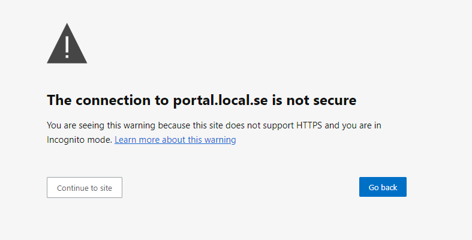

Add an app to the portal#
To add a new Ansys Web App (AWA) to the Ansys App Portal, you must upload the corresponding optiSLang application (.awa) file. You can do this either via the user interface of the portal (recommended) or by placing it in the solution directory manually.
Note
Following steps assume that you have an optiSLang .awa file available.
You can also download the sample .awa file from here.
Note
The app deployment on the Ansys App Portal can take 5-10 minutes or more depending on the size of the app, network speed. During this time, the app is not available for use.
Upload AWA file from the portal#
Recommended
This is the preferred approach for adding solution apps to the Ansys App Portal.
You can add a URL-based solution app to the Ansys App Portal by uploading an .awa file from the portal user interface.
Open the Ansys App Portal at http://portal.local.se.
Note
If you get an error or warning message in browser that The connection to portal.local.se is not secure, select an option to continue to site. For any such subsequent warnings, select the same option to continue to the site.
{kind=link}
Sign in with the default portal administrator credentials:
Username:
adminPassword:
admin
Note
If you have changed the value of
OP_EMAIL_DOMAINinside the.envfile before instantiating the platform, the default portal administrator credentials do not work. To log in with these credentials, you need to change their email domain, as follows:Log in to the Keycloak Admin Console at http://keycloak.local.se:8011/auth/ (or whatever URL is specified by
KC_ADMIN_URL).Change the email domain to match the one specified by
OP_EMAIL_DOMAIN.
For more information, see Manage users.
The portal opens to its Home page in a new browser tab.
Click the Create application button.
The Create application dialog opens.
On the URL-based tab, expand Create application by uploading .awa file.
Click the Upload AWA file button, then find and open the
.awafile for the solution you want to add.If the file is uploaded successfully, the file name is displayed in green.
Click the Create application button.
If the app is added successfully, the following Success confirmation message is shown.
If the uploaded .awa is not compatible with the platform, failure error message is displayed.
Warning
If the app already exists on the portal, a Conflict validation message is shown, asking if you want to override the existing app. For more information on overrides, see App versioning on the portal before proceeding.
On the Success message, click the View application button.
You are returned to the Application settings dashboard, an administrative page which shows all the apps added to the portal. The new app is visible and can be managed from here by portal administrators.
{kind=link}
{kind=link}
{kind=link}
{kind=link}
{kind=link}
Upload AWA file from solution directory#
You can upload a solution app to the Ansys App Portal by placing the corresponding .awa file in the solution directory.
The solution directory is the directory specified by the SOLUTIONS_DIRECTORY_PATH environment variable. (For more information about this environment variable, see Platform deployment.)
For example, the following environment setup has the environment variable pointing to a directory on the D:\\ drive:
SOLUTIONS_DIRECTORY_PATH=D:\\solution_folder\\new_awa
The directory structure for this example should look like this:

To upload an .awa file, just place the file in the SOLUTIONS_DIRECTORY_PATH directory using a drag-and-drop or copy-paste operation. Once the file is uploaded, the platform detects it and starts adding it to the portal.
Attention
While the .awa file is being processed by the platform, close or minimize the File Explorer window of the SOLUTIONS_DIRECTORY_PATH directory and avoid interacting with the directory.
As the platform processes the .awa file, you can watch the execution logs in a terminal for the activated virtual environment. Examples of typical processing logs are shown in the following images.
{kind=link}
{kind=link}
App versioning on the portal#
Solution apps are added to the Ansys App Portal and defined using the combination of the name + version values specified in the pyproject.toml file for the app—NOT using the file name of the uploaded .awa file.
Duplicate name#
If you upload an .awa file that has the same name value but a different version value as an app that exists on the portal, it is created as a different application and displayed on a separate card or row (though with the same name) on the Application settings and Applications dashboards.
{kind=link}
Duplicate name and version#
If you upload an .awa file that has the same name and version values as an app that exists on the portal, it fails validation and the Conflict dialog is displayed, asking whether you want override the existing app.
{kind=link}
If you click the Override button, the new .awa file being uploaded replaces the existing .awa file for the app, while preserving all projects created with the previous app.
Note
The override process can take can take 5-10 minutes.